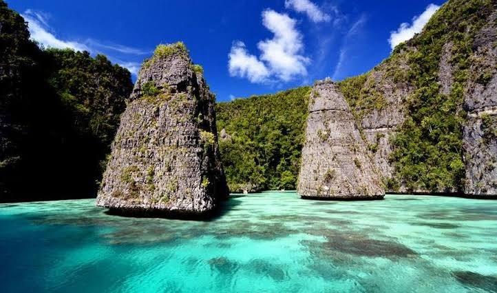

5-8 nights
Illustrative duration range for route planning.

Trips
Build a route around the places, water conditions and pace that matter to you.
Trip builder
Contoh data ilustrasi. Drag a place into your itinerary or tap it. Your plan is stored only in this browser.
Dive site database
Illustrative guide fields only. Confirm current conditions with your dive operator.
Reef edge · current-aware · advanced planning recommended

Pelagic encounter · conditions vary · animal-first etiquette

Liveaboard
Compare cabin layout, number of dives, tender logistics, transfer days, internet expectations and emergency procedures. Treat every listing as illustrative until an operator confirms it.
Illustrative duration range for route planning.
Download documents, maps and emergency contacts before departure.
Trip memory
Wishlist, trip history and referral are local demo features. No account is required.
Karst, lagoons and viewpoints.
Southern route and ancient karst.
No local trip saved yet.